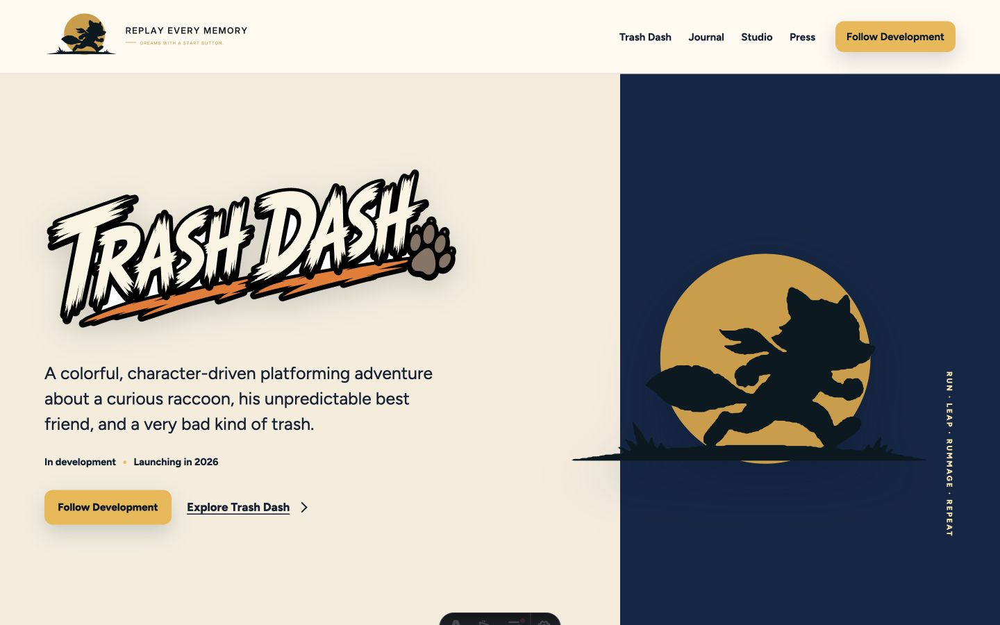
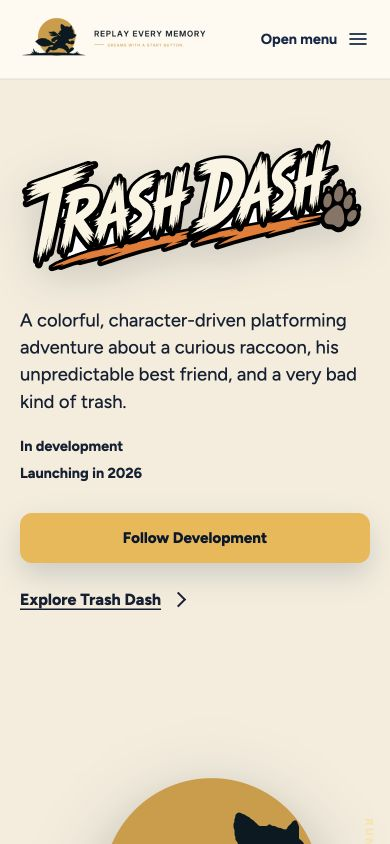

Unseen Studio
Full-canvas art direction, minimal navigation, one positioning line, and a single work CTA.
Open in Mobbin ↗Replay Every Memory already has a memorable identity and voice. The next leap is to reduce explanation, increase playable proof, and turn every major destination into a useful, finished experience.
Desktop establishes the brand immediately, but the hero’s right side communicates the studio mark more than the game. On mobile, the logo, description, status, and two CTAs fill the opening screen before character or game imagery arrives.


The strongest references establish a world immediately, then use one concise proposition and one unmistakable action.
Full-canvas art direction, minimal navigation, one positioning line, and a single work CTA.
Open in Mobbin ↗A branded retro-computer metaphor supplies the personality while the copy stays concise.
Open in Mobbin ↗Not a studio, but a useful clarity model: category, value, explanation, CTA, illustration.
Open in Mobbin ↗Visual grids and strips create range without requiring many projects. Trash Dash can generate that range through movement, characters, environments, enemies, and development milestones.
Large two-column imagery with short titles and lightweight categorization.
Open in Mobbin ↗A bold thesis paired with long project strips and compact supporting metadata.
Open in Mobbin ↗The most credible culture sections show specific people and practices. A mission becomes believable when visitors can see who is doing the work and how.
Mission leads; the editorial story explains how that belief changes the work.
Open in Mobbin ↗Press pages earn trust through accurate, scannable, downloadable information. They should minimize friction for creators, journalists, and partners.
An intentionally plain dated link list keeps retrieval fast and predictable.
Open in Mobbin ↗The current material is good; the structure needs stronger editing. Move the longer manifesto content to Studio or Journal and let the homepage prove the game quickly.